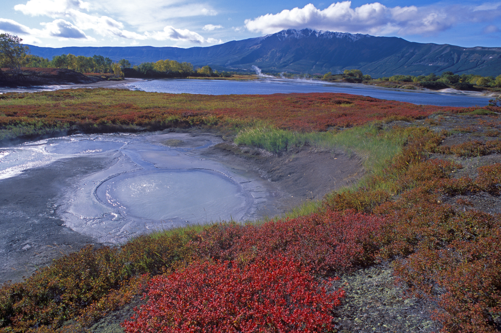

ОБЗОР
Южно-Камчатский заказник — единственный заказник федерального значения на Камчатке. Он входит в состав Кроноцкого государственного заповедника и объединяет земли на крайнем юге полуострова, в том числе трехмильную зону акватории Тихого океана. Настоящие хозяева здешних мест — птицы и звери, морские и сухопутные. Говоря официальным языком, заказник занимается сохранением природных комплексов юга Камчатки, включая экосистему бассейна Курильского озера, обеспечением охраны путей массовых миграций перелетных птиц, сохранением популяций калана (морской выдры), снежного барана и бурого медведя.
-

Фотоальбом
Ядром заказника является Курильское озеро. Это заполненный дождевой и ледниковой водой кратер древнего вулкана — необыкновенной красоты водоем посреди вулканического пейзажа, рядом с действующим вулканом Ильинский (1578 м). Площадь его составляет 77 квадратных километров, максимальная глубина — 316 метров. На озере есть несколько островов, представляющих собой вулканические купола. Подводные источники на северо-восточном берегу, где возвышается вулкан Ильинский, согревают воду бухты Теплая. В Курильское озеро ежегодно приходят на нерест лососи-нерки, причем нерест продолжается полгода, с августа до весны, не прекращается даже зимой, когда озеро замерзает. В августе-сентябре «на лосося» являются медведи. По словам фотографа-натуралиста Игоря Шпиленка: «Камчатка самое медвежье место России. А Южно-Камчатский федеральный заказник — самое медвежье место Камчатки». Толпы медведей, по одиночке и семьями, с медвежатами, ловят здесь рыбу и отъедаются на зиму. Это зрелище, как и прекрасная пейзажная натура для фотографов, манит к озеру туристов, для которых в это время организуют специальные «медвежьи туры».
С приходом холодов вокруг незамерзающих нерестилищ собирается большое количество хищных птиц: белоплечие орланы, орланы-белохвосты, беркуты и даже заморские белоголовые орланы. На берегах есть и памятники человеческой истории: открытые археологами стоянки и курганы таинственного народа айнов, называемых также курильцами.
Столица Южно-Камчатского федерального заказника — кордон Озерный. Это маленький заповедный поселок на Курильском озере. Здесь есть бесперебойное экологически чистое электричество от солнечных панелей и ветрогенератора, интернет, склад, вездеходная дорога до берега Охотского моря, визит-центр, электрический забор. Рядом с кордоном заповедника находится стационар КамчатНИРО. До устья реки в Охотском море 62 километра.
Кроме озера Курильского и вулкана Ильинского, среди природных памятников заказника выделяются: действующий вулкан Камбальный (2161 м) — самый южный камчатский вулкан, конец Вулканического хребта; Кошелевский вулкан (1812 м) с мощными термальными полями, горячими и холодными минеральными источниками; мыс Лопатка — южный край Камчатки, субарктическая зона с богатой фауной, от многочисленных перелетных птиц до пушных зверей и морских животных, котиков и нерп; остров Уташуд с большой колонией морских животных — каланов, антуров и нерп, а также серых китов, которые базируются около острова с весны до декабря; и Кутхины Баты — природное обнажение пемз на берегу Озерной реки, вытекающей из озера Курильское. Пемзы напоминают множество поставленных «на попа» лодок-батов, что, естественно, породило легенду о лодках бог-ворона Кухта и сделало это место священным для аборигенов-ительменов.
В декабре 1996 года Южно-Камчатский заказник был включен в Список объектов Всемирного природного наследия ЮНЕСКО в составе номинации «Вулканы Камчатки».
ВАЖНО
На территории заказника запрещается любая деятельность, противоречащая задачам и режиму особой охраны территории, в том числе: охота, рыболовство, добывание животных, сбор дикоросов и палеонтологических объектов, огородничество, строительство зданий и сооружений.
Разрешается проведение эколого-просветительской работы, включая экологический туризм, на специально выделенных участках.
МЕСТНЫЕ ОСОБЕННОСТИ
Официальный день рождения Государственного природного заказника «Южно-Камчатский» — 8 апреля 1983 года.
Туристические маршруты по территории Южно-Камчатского заказника Эколого-просветительский экскурсионный маршрут «Медвежья поляна»: берега Курильского озера в районе кордона Травяной, вулкан Камбальный, бурые медведи на ягодной тундре и их кормовые растения. С июня по октябрь.
Ландшафтная и зоологическая экскурсия «Загадки Хакыцина» в пойме реки Хакыцин неподалеку от кордона Травяной на Курильском озере. Пемзовые отложения и береговые террасы в долине реки Хакыцин, ход нерки по нерестовой реке, рыбалка бурых медведей на реке, Сыпучий Камень.
«Царство нерки и бурого медведя» (с мая по октябрь) — район озера Курильского, кордон Травяной. Бурые медведи на рыбалке, нерка на нерестилищах и в прибрежной акватории озера, вулкан Ильинский, вулкан Камбальный. С мая по октябрь. В мае-июне есть ограничения для туристов, поскольку это брачный период у медведей и гнездовой период у птиц.
«Экосистемы Курильского озера» — то же самое, что и предыдущее, в районе кордона Озерный. Бурые медведи на рыбалке, ход нерки на нерест, река Озерная, Ильинский вулкан, хребет Дикий гребень.
Ландшафтная экскурсия к природному памятнику «Кутхины Баты» проходит в районе кордона Озерный Курильского озера. Объекты показа: обнажения пемзовых отложений, бурые медведи в пойме реки Озерной. С июня по октябрь.
«Мишки на Северной» — комплексные натуралистические наблюдения за поведением бурых медведей и нерестом нерки на Курильском озере в районе кордона Озерный. Бурые медведи на рыбалке в истоке реки Озерная, в бухте Северной и в устье реки Первая Северная, панорамы Курильского озера. С июня по октябрь.
Ландшафтная экскурсия «С высоты птичьего полета» — район Курильского озера, кордон Озерный. Панорама Курильского озера с высоты 618 метров над уровнем моря с сопки Домашней, растительность среднегорья, вулканы Ильинский, Камбальный, Желтовская сопка, хребет Дикий Гребень, бурые медведи. С июля по октябрь.
«Тайны Курильского озера» — акватория и острова озера Курильского, бухты Северная и Теплая, архипелаг Саманг, острова Сердце Алаида, Низкий, Чаячий, устья рек Гаврюшка, Кирушутк, Этамынк, Хакыцин. Наблюдение за бурыми медведями на берегу озера и в устьях рек и ручьев, осмотр колоний тихоокеанской чайки. С июня по октябрь.
«Там, за туманами…»: панорамы Камбального озера, медведи в естественной среде обитания, нерест нерки, экосистемы альпийских тундр и пояса стлаников. С июля по октябрь.
Эколого-просветительский экскурсионный маршрут «К обитателям морской стихии»: морская акватория заказника в районе бухты Вестник и острова Уташуд на юго-восточном побережье полуострова Камчатка. Береговые приморские террасы и острова-кекуры высотой 153 и 196 метров; лежбище каланов; лежбище настоящих тюленей; серые киты; колонии морских птиц; орланы. Маршрут действует в период открытой навигации. В период размножения морских млекопитающих (с 1 апреля по 15 мая) и период гнездования колониальных птиц (15 мая — 15 июня) вводятся ограничения на посещение репродуктивных участков.